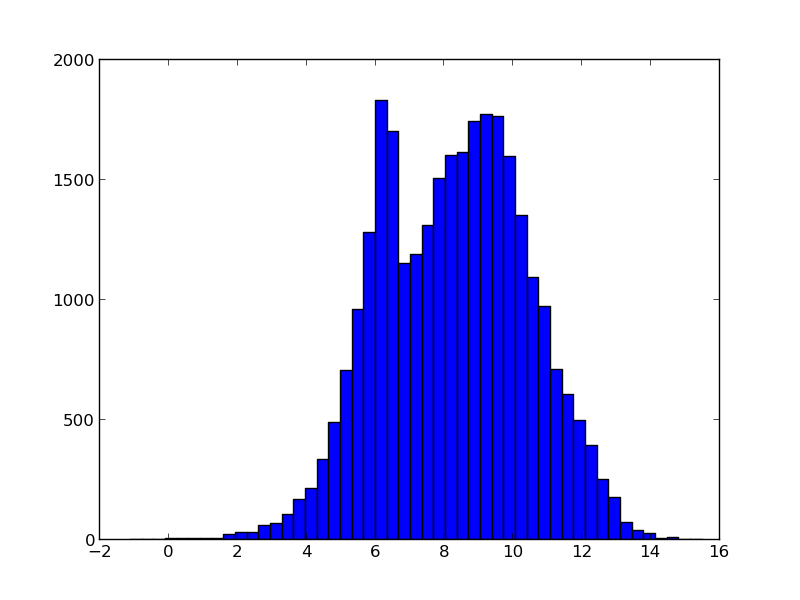
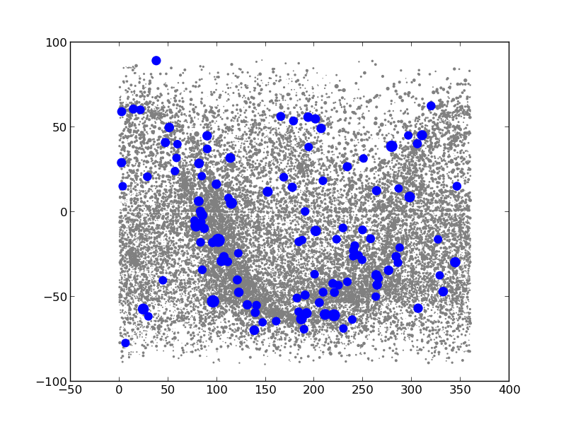

{kind=link}
{kind=link}

In this example, we want to
The catalog we use is the Geneva Photometry Catalog from Rufener (1988). It is accessible through the ViZieR website via its designation II/169/main. First we will download the catalog to the local disk:
import urllib, pyfits, os
vizier_url = 'http://vizier.u-strasbg.fr/viz-bin/asu-fits/VizieR?' # website of ViZieR
cat_url = '&-source=II/169/main' # name of the catalog
cat_options = '&-oc=deg,eq=J2000&-out.all' # retrieve all columns, coordinates in J2000 and degrees
if not os.path.isfile('gen.fits'): # don't download if the file already exists
urllib.URLopener().retrieve(vizier_url+cat_url+cat_options,filename='gen.fits')
What’s in this FITS file? Let’s have a look:
hdus = pyfits.open('gen.fits')
len(hdus) # 2 HDUs, an empty primary and a Table extension
print(hdus[1].header) # information on the columns names, contents and type
That’s a lot to digest! We have many columns, and some of them contain strings, other contain floats etc... A normal numpy array doesn’t seem fit to hold this kind of information: a normal array cannot contain columns of different types, and functions like sum or transpose loose their meaning. Also, putting all the data in columns in a matrix is not optimal, because we want to access columns by their name (easy to remember), not by a number (difficult to remember). That’s easy enough with the FITS table extension:
print(hdus[1].columns.names)
print(hdus[1].data.field('Vmag'))
Still, we want to use the powerful indexing mechanisms of numpy arrays to select for bright and blue stars, and plot the coordinates.
For this particular problem, numpy subclasses the basic array type into record arrays, which are very similar to FITS table extensions, but add the power of numpy. In fact, when you use pyfits, the pyFITS record behaves almost like a numpy recarray.
Click to Show/Hide Introduction to recarray
Let’s start with a small example. We make a record array with 3 columns: an index array (integer type), a column with magnitude values, and a column with star names:
col1 = np.arange(4)
col2 = [0.03,-1.47,1.816,0.42]
col3 = ['Vega', 'Sirius', 'Mirfak', 'Betelgeuse']
recarr = np.rec.fromarrays([col1,col2,col3],names=['index','vmag','name'])
recarr
The default string representation is quite difficult to read. Luckily, matplotlib provides us with a nice alternative:
import pylab as plt
print(plt.mlab.rec2txt(recarr)) # pretty print
recarr['vmag'] # extract one column
recarr[0] # extract first row (or record)
recarr.dtype.names # access column names
recarr2 = recarr[ (recarr['vmag']<0) ] # slicing is possible as usual
print(plt.mlab.rec2txt(recarr2)) # pretty print
Though a pyFITS record has almost the same behaviour as we require, a numpy record array is more general in its use. Therefore, we convert the FITS record to a numpy record array:
names = hdus[1].columns.names # we need the column names
cols = [hdus[1].data.field(col) for col in names] # and their content
cat = np.rec.fromarrays(cols,names=names)
print(cat.dtype.names) # similar to hdus[1].columns.names
cat.shape # and we have access to numpy commands
Next, we make a new catalog, with only the bright and blue stars.
bright_blue = (cat['Vmag']<3) & (cat['V-B']>0)
len(bright_blue),sum(bright_blue) # how many stars do we have, and how many or bright and blue?
cat_select = cat[bright_blue] # make the selection
cat_select = cat_select[np.argsort(cat_select['Vmag'])] # sort according to magnitude
Click to Show/Hide Alternative with dictionaries
How would the above look when we would use dictionaries instead of record arrays? First, we make a dictionary of the catalog:
cat2 = {name:cat[name] for name in cat.dtype.names}
cat2_select = {key:cat2[key][bright_blue] for key in cat2}
sortarray = np.argsort(cat2_select['Vmag'])
cat2_select = {key:cat2_select[key][sa] for key in cat2_select}
Compare [2] with [31] and [4] with [32]. Though we can the same with dictionary with an equal amount of lines, record arrays provide a much more logical interface, and does not require us to cycle over the columns in the catalog manually.
Now we can make the plots that we want. For fun, we first make a histogram of the magnitudes of all stars in the catalog. Then, we make a plot of the location of all stars (grey dots) and the selected one (blue dots). Also, we scale the size of the dots with the brightness of star.
plt.hist(cat['Vmag'],bins=50)
size = ((cat['Vmag'].max()-cat['Vmag'])/5.)**3 # size the dots with mag
size_select = ((cat['Vmag'].max()-cat_select['Vmag'])/5.)**3
plt.scatter(cat['_RAJ2000'],cat['_DEJ2000'],color='0.5',s=size,edgecolors='none')
plt.scatter(cat_select['_RAJ2000'],cat_select['_DEJ2000'],color='b',s=size_select,edgecolors='none')
|  |  |
Finally, we are interested in the names 10 brightest blue stars in this catalog. We need to convert the HD number to the official star name. We use the sesame online database (i.e. SIMBAD), download the HTML files with the info on the stars, and extract their name and spectral types. We can use the non-standard package BeautifulSoup:
import BeautifulSoup as bs
import urllib2
for hd in cat_select['HD'][:10]:
html = "".join(urllib2.urlopen('http://cdsweb.u-strasbg.fr/cgi-bin/nph-sesame/-oxpsIF/S?HD{0}'.format(hd)).readlines())
page = bs.BeautifulSoup(html)
name = page('oname')[0].text
sptype = page('sptype')[0].text
print(name,sptype)
There seems to be a solar-like star in there!
Click to Show/Hide Solution without BeatifulSoup
What would the previous script look like when BeautifulSoup is not installed? In this case, we’ll have to read in the and extract the information manually. We could write the following Python code:
for hd in cat_select['HD'][:10]:
lines = urllib2.urlopen('http://cdsweb.u-strasbg.fr/cgi-bin/nph-sesame/-oxpsIF/S?HD{0}'.format(hd)).readlines()
for line in lines:
if 'spType' in line: sptype = line.split('>')[1].split('<')[0]
if 'oname' in line: name = line.split('>')[1].split('<')[0]
print(name,sptype)